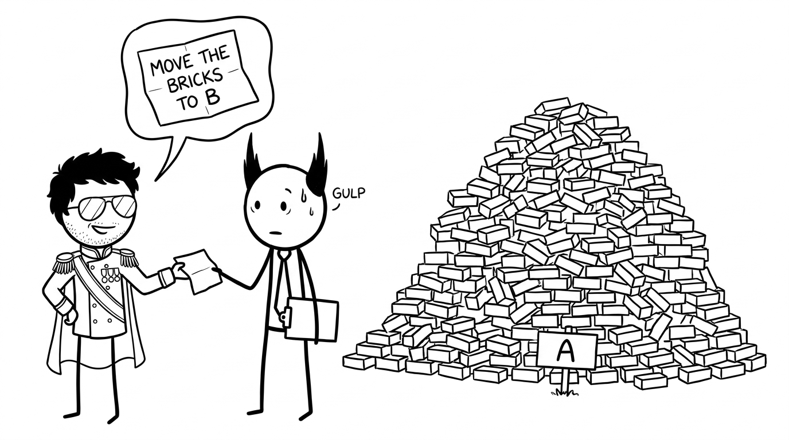

<section id="the-job" data-transition="fade" style="display:flex; align-items:center; justify-content:center; padding:0; background:#fcfcfa">

<p style="position:absolute;left:0;bottom:10px;width:1920px;margin:0;text-align:center;font-family:'Patrick Hand', 'Trebuchet MS', sans-serif;font-size:22px;color:#8a8f98">Copyright Dobromir Montauk 2026</p>
<aside><b>The note.</b> Every EM gets some version of this note, usually with less detail. You have to build the team, and the technology, to get it done. Why bricks? Shipping features isn’t that different: units of value, hauled to a customer who’s waiting at the other end.</aside>
</section>
